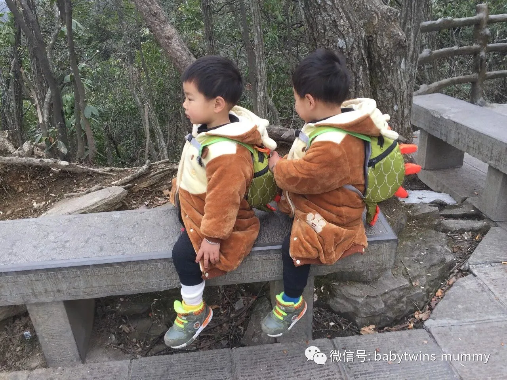
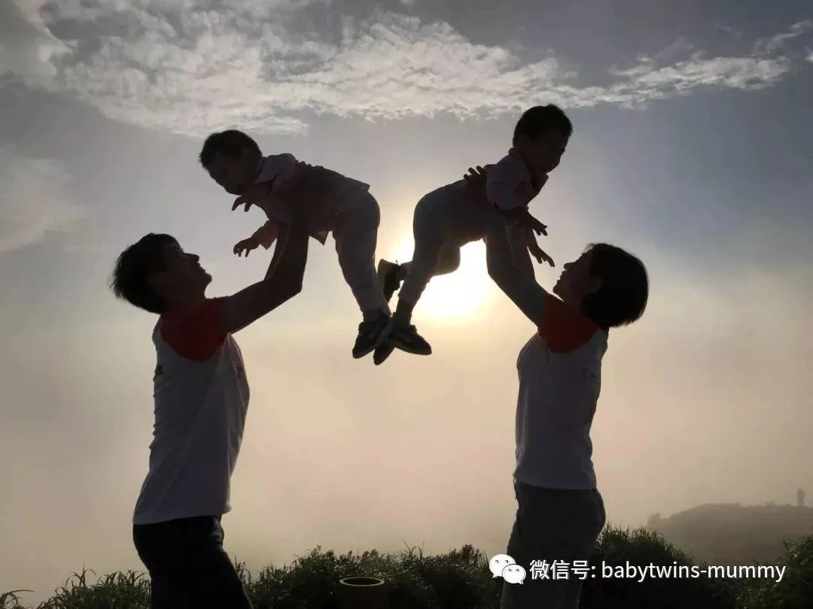

点击上方“孖仔帮”关注我们
孖仔帮
汇集全国各地及海外的双胎妈妈的交流园地
专门针对双胎孕期，喂养，教育等方面的经验分享
孖仔帮期待您的加入！
让我们一起成长，快乐育儿！
01
2018年的七月四日，我家那两只孖仔“小男子汉”入园体检日。只是一眨眼的功夫，这两只小屁孩就要上幼儿园了！想想三年前的今天，我还躺在留医部的爱婴区保胎待产。
01
圆圈哥俩上幼儿园，最开心的莫过于圆圈爸了，这位奶爸已经好久没有回归社会了，终于要解脱了！
01
以至于那天去开新生入园家长会的时候，圆圈爸激动万分的心情无以言表。
尤其是受到园长老师对宝爸参加家长会的表扬，圆圈爸更加大受鼓舞，像一个勤奋好学的三好学生一样，坐在前排，很认真地做笔记。
01
这不，对于入园体检，比谁都上心。早早就计划地妥妥的啦！
圆圈兄弟的新生入园体检机构是黄阁坑社康中心。
全称：龙岗区中医院黄阁坑社区健康服务中心。
交通
坐公交车
附近公交车站---福安学校，下车后往福安学校的方向走，在福安学校的大门口50米远处有一个岔路口，那里竖着一块指示牌，从岔路口往村里走进去约80米远就到了。
自驾车
开车的家长可以导航“黄阁坑社区健康服务中心”.服务中心门口有一个小型停车场，但场地有限大概只能停七八辆车吧，来得晚估计就没位置停了，可以把车停在村里（就是岔路口那的小坡道上）。我们八点钟到那，空位已经所剩无几了。
体检流程
l 领体检卡：在一楼大厅，到健康教育室领取体检卡，即《儿童入园（入托）体检表》
l 填写幼儿信息，贴照片：在一楼大厅的药房边上有桌椅，可以坐下来把幼儿的基本信息填上。服务中心有提供笔和胶水，不用自带。
l 建立档案：在一楼大厅，去全科诊室找医生建立档案，录入信息，开具体检收费单。
l 缴费：在一楼大厅，拿着体检收费单，去收费处缴费（收费处跟药房是一起的）每人105元，需自费！
体检步骤
l 量身高体重：在一楼大厅，即全科诊室的门外就有一台机器，站上去即可得出幼儿的体重和身高，家长可以用手机拍下数据，后续给到医生记录。
l 去全科诊室（就是开单处）进行一般健康体检，如看下幼儿的五官，口腔，脊柱，四肢，生殖器等。比较简单，非常流程化地过一遍。
l 测听力，在二楼，从走廊穿过去有楼梯直接可以上去，在楼上只有一个项目，听力筛查。因为需要保持安静的环境，测听力这一项被单独安排在二楼。护士拿着一个仪器，把类似耳塞的东西放入幼儿的耳朵，一般3分钟左右就可以做完。测听力容易受外界的干扰，请在门外等候的家长和孩子保持安静哦！进去测试之后，也请记得随手关门！
l 抽血：一般家长会先让幼儿抽血，以便抽完血之后能让孩子早点进食。但实际是我们在排队的时候，被护士建议先完成其他项目最后才抽血，因为抽血的时候，幼儿的情绪会受到影响，以至于后面的项目无法配合好。
l 上交体检卡：抽血完之后，护士会把体检卡保留，一个星期后再去拿结果。
注意事项
1. 不用预约，直接去到就可以体检。注意下体检时间：每周一，周三，周五，周日，均是上午8:00---11:30。特别提示，抽血要在10：00前完成。
2. 关于空腹：我对空腹的理解是不能吃东西，水也不能喝。结果圈圈在抽血的时候，血都有点带黑色了。医生问我是不是没有给孩子喝水。我才知道，纳尼？原来空腹是可以喝水的。
3. 为了避免排队，可以先上去二楼测听力，再去全科诊室做其他检查，因为全科诊室要开单又要做体检项目，通常等待时间比较长，家长可以先去做人少的项目。
4. 给孩子带点零食玩具或者对他们有诱惑力的东西，因为抽血是件让所有家长很头疼的事情，有东西诱惑下幼儿，转移下他们的注意力，可以让抽血没那么“惨不忍睹”。
5. 避开高峰期，我们八点钟到的，9点半才做完，其实人不是不多，我们还是在里面混战了很久！主要是8点半—9点钟之间正是高峰期，我们也正好这个时候等候抽血项目。如果能巧妙规划好体检项目，一般半个小时就能搞定。
6. 抽血项目需要排队的时候，最好一人排队，另一人带着孩子在外面等候，免得受到其他孩子的影响，还没轮到就先哭得一塌糊涂。
7. 填写体检卡需要用到笔，虽然服务中心有提供，但遇到人多就会供不应求，为避免不必要的等待，最好带上笔哦！
8. 什么资料都不用带，但请记得带相片。幼儿的一寸相片，蓝底，白底，红底都可以。体检卡无相片不予体检！
圆圈妈有话说
01
在体检的前一天晚上，我就跟圆圈哥俩“打招呼”了，甚至和圆圈爸合伙来一段抽血项目的模拟演练。圆圈哥俩对体检的第一反应是扎手指，圈圈甚至一副很惊恐的伸出手指说“医生叔叔会‘抠（扎）手指’的哦！”而圆圆则噘着嘴表示不想谈论这个话题。
体检当天，圈圈还没七点钟就爬起来，吵着要去体检，很积极地换好衣服鞋子，催着我们出发，而圆圆一起床就哭喊“我不要去体检”，赖在床上拒绝一切“花言巧语”的哄骗。
圈圈的“淡定从容”，圆圆的“抵死不从”让我们胆战心惊来到了健康服务中心。
圆圆刚到了一楼大厅马上又来情绪了，哭丧着脸要求回家。他对所有穿白大褂的医生护士有阴影，且有特殊的防备心。这可能跟他刚出生那会进过NICU有关，特别没有安全感，一旦感觉到危险因素，就马上启动防备措施。
而圈圈则屁颠屁颠地跟着他的爸爸跑上跑下，丝毫不受影响。
02
看着他们哥俩这样截然相反的表现，凭我是他们的娘，我有种不祥的预感。
果然，圈圈在抽血环节被“打脸”了，刚刚还稳如泰山的情绪瞬间被护士那根长长的针管给燃爆了，圈圈被圆圈爸强抱进抽血室的时候就已经崩溃大哭了，使劲地扭动着身体，踢打着桌子试图逃走，护士想要抓他的手，都被他狠狠挣脱了。
他这一哭不得了了，后面还没轮到的小朋友被圈圈那惊天地泣鬼神的哭声传染了。顿时，整个抽血室，哭声一片，哀鸿遍野，甚至有大一点的小男孩哭喊着夺门而逃。这就是为什么建议家长不要带着孩子排队抽血的原因了。我觉得圈圈很有可能也是被之前抽血的孩子传染了。
最后，我们使出无条件满足他所有条件的情况下，才对他采血成功！
03
轮到圆圆了，这个从一开始就哭得“凄凄惨惨戚戚”的美男子，居然破天荒地听任圆圈爸抱着，不哭不闹。即使护士已经亮出了又长又尖的针管，圆圆依然一副“我才不怕”的样子。
可把为娘惊呆了，后面排队的家长们都啧啧称赞。就在大家准备为他的勇敢情不自禁要来点掌声的时候，这个安静的美男子HOLD 不住了，开始小声哭泣抗拒，然后就哀求“好了！好了！不要打针了！”可是圆圆运气不好，采到第二管血的时候，血一直没有流出来，只好在另外一直手再扎一针。
04
这里要点评下黄阁坑健康服务中心不足的地方，
环境较差。没有相关幼儿体检的指示牌指引，让人一头雾水。比如上二楼测听力，可能来得早的缘故，所有门都锁住了，门外也没有告示，更加没有相关说明要到哪个科室。
我和其他家长每个门都轮流敲了一遍，还“暴力”推了下。直到看到从其中一个锁住的门里走出一个刚带孩子体检完的家长，我才停止了即将“破门而入”的动作。
抽血的护士技术有待提高。可能跟小孩子不配合有关，或者其他外界因素干扰。但不管怎样，我的圆圆被扎了两针。圆圈哥俩9个月大的时候在港大医院测乙肝抗体，那时候的血管比现在的细吧，更加难找吧。可是那里的护士一个人就搞定了，且很快就采血成功了。
这里的护士，遇到顽强抵抗的孩子，就需要叫来男医生帮忙按住，找血管也花了半天时间，而且这没找对，还得在另外一个手上再扎一针，好在另外一只手血管丰富，一口气就采血成功了！我想这就是为什么我本人及孩子不去社康看病的原因之一吧！
圆圈妈：资深屌丝女+腐女一枚，家有孖仔男两枚。
微信公众号ID：babytwins-mummy 孖仔帮
个人博客：双胞胎萌娃会（www.sgguy.com）
一个专注双胞胎群体的网站，每天分享亲子养育经验
目前孖仔帮建立了微信群
孖仔帮双胞胎孕期群&孖仔帮双胞胎养育群
家长们可以根据需要进入任意一个群
想要进入孖仔帮的微信群
可以加圆圈妈的微信。
由圆圈妈邀请入群
欢迎加入双胞胎大家庭
让我们一起学习成长，快乐育儿！
公众号：孖仔帮
ID:babytwins-mummy
个人博客: www.sgguy.com
一个专注双胞胎群体的育儿网站
点击下方“阅读原文”，可直接进入博客网站

